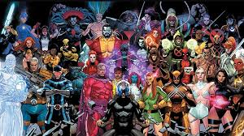

About Our Team
Meet the passionate individuals behind Nature's Career Compass who are dedicated to connecting people with meaningful careers in nature conservation and environmental protection.
Anushka Sonai
President of Creative Techub Caribbean
Creative Techub Caribbean
Anushka provides strategic leadership and technological expertise through Creative Techub Caribbean, supporting innovative projects that bridge technology and environmental conservation.

Ielaiza Ellensburg
Facilitator & Project Coordinator
Ielaiza ensures the smooth operation of Nature's Career Compass, coordinating between team members and stakeholders to bring this vision to life.

Sygourney Nelis
Website Developer
Sygourney is the technical developer behind Nature's Career Compass, implementing the functionality and ensuring the website operates smoothly and effectively.

Sephora Reding
Team Lead
Sephora provides leadership and direction for the Nature's Career Compass project, ensuring the vision is realized through effective coordination and strategic planning.

Kirtie Gobiend
Researcher
Kirtie is responsible for researching nature-based careers and environmental opportunities, ensuring the quiz provides accurate and relevant career recommendations.

Faith Wirjoredjo
Designer
Faith focuses on the visual design and user experience of Nature's Career Compass, creating an engaging and intuitive interface that connects users with nature-inspired careers.